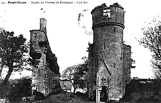

Geneviève de Rustéfan
Genevieve of Rustéfan
Dialecte de Tréguier
|
Pourtant on lisait dans l'édition de 1845 (tome II, p.70): "J'ai entendu chanter pour la première fois la pièce à une pauvre femme de Nizon nommée Catherine Pikan". Il s'agit d'une erreur de lecture de la table B où Catherine Le Picart (difficilement lisible) voisine le titre "Rustéphan", premier de trois morceaux chantés par Catherine Rouat. La table B lui attribue un autre chant sous deux titres "La jeune fille brûlée au Folgoat " et "Françoise Le Picart". Dans le 1er carnet de Keransquer (p. 290), Katell Roat est l'héroïne d'une "zône" où l'on voit François Richard, originaire du bourg de Nizon, demander en mariage Pélagie qui, bien qu'étant de Pont-Aven, se considère une paysanne et refuse. Katell Roat, du bourg de Nizon, demande en mariage un paysan, Yves Le Penven de Kernonen (sans doute un parent de l'Anne Penven des "Hirondelles" ). Lors d'une fête commune, chacun épouse son semblable, une fois que le sort a évité aux jeunes hommes l'interminable conscription. - sous forme manuscrite: . par de Penguern, t.90, "Philipp Olier", (Taulé, 1851), publié dans "Gwerin" N°6 et dans "Al Liamm", t.III, 54, "Philipp Olier" (fragment). . par Luzel: Bibiothèque Nationale, Nouvelles acquisitions françaises, 3342, 308, "Jeannedik ar Yudek". - publié en recueil: . par Luzel, "Gwerzioù" 1, ""Janet ar Iudek" (Plouaret, 1844, 1848) et "Janedik ar Marec (Prat, 1852); "Gwerzioù" 2, "Mari ar Moal" (Plouaret). . par Bourgeois, "Kanaouennoù Pobl", "Gwerz Janned ar Marec" (Belle-Île-en-Terre, 1868), publié dans le Bulletin de la Société Académique de Brest, 1888. - publié dans des périodiques: . par Milin dans "Gwerin", 1, "Kloarek Rosko", . par H. Pérennes dans "Annales de Bretagne" XLVI (1939), "Genovefa Naour" (Nizon, 1937). |
 Château de Rustéfan |
Nevertheless the 1845 edition (Book II, p.70) read: "I first heard this piece sung by a poor woman from Nizon, named Catherine Pikan". This is due to a reading mistake, since on Table B, the name Catherine Le Picart (uneasy to read) is adjoining to the title "Rustéphan", the first of three songs sung by Catherine Rouat. Table B ascribes to her another song under two titles "The girl burnt at the stake in Folgoat " and "Françoise Le Picart". In the first Keransquer copybook (p. 290), Katell Roat is featured in a "zône" where François Richard, from the town of Nizon, proposes to Pélagie who, coming from Pont-Aven, considers herself a country girl and turns him down. Katell Roat, from Nizon town, would like to marry the country boy, Yves Le Penven from Kernonen (maybe a relative to the Anne Penven mentioned in the "Swallows" ). In a joint feast, eveybody marries their fellow creatures, once good luck has freed the young me endless military service. - in handwritten form: . by de Penguern, t.90, "Philipp Olier", (Taulé, 1851), published in "Gwerin" N°6 and in "Al Liamm", t.III, 54, "Philipp Olier" (a fragment). . by Luzel: Bibiothèque Nationale, Nouvelles acquisitions françaises, 3342, 308, "Jeannedik ar Yudek". - published in song collections: . by Luzel, "Gwerzioù" 1, ""Janet ar Iudek" (Plouaret, 1844, 1848) and "Janedik ar Marec (Prat, 1852); "Gwerzioù" 2, "Mari ar Moal" (Plouaret). . by Bourgeois, "Kanaouennoù Pobl", "Gwerz Janned ar Marec" (Belle-Île-en-Terre, 1868), published in the Bulletin de la Société Académique de Brest, 1888. - publihed in périodicals: . by Milin in "Gwerin", 1, "Kloarek Rosko", . by H. Pérennes in "Annales de Bretagne" XLVI (1939), "Genovefa Naour" (Nizon, 1937). |
Ton
(Mode hypodorien, Arrangt MIDI: Christian Souchon. Fond sonore decette page)
| Français | Français | English |
|---|---|---|
|
I
1. Lorsque, enfant, Yannick, gardait ses moutons Il ne pensait guère à la religion. (ter) 2. - Qui donc voudrait faire un prêtre de moi. Qui suis entiché de jolis minois? - 3. Et pourtant sa mère un beau jour lui dit: - Vous avez, Yannick, mon fils, trop d'esprit 4. Pour rester berger. Suivez moi, mon cher: On fera de vous un prêtre à Quimper. 5. Le grand séminaire est pour vous le mieux. Aux filles, bien sûr, il faut dire adieu.- II 6. En fait de beauté, l'on vantait beaucoup, Celle des enfants du Sieur du Faou. 7. Il fallait les voir passer, le front haut, Les jolies enfants du seigneur du Faou. 8. Leur charme éclipsait les blondes, les brunes Comme le soleil éclipse la lune. 9. Chacune montait une jument grise Pour se rendre à Pont-Aven, à l'église, 10. Et quand au pardon, elles se rendaient Leurs juments faisaient sonner le pavé! 11. Il fallait les voir, vêtues de soie verte Et, de chaînes d'or la gorge couverte. 12. Mais la plus jeune et la plus belle aussi. C'est Yann de Kerblez qu'elle aime, a-t-on dit. 13. - Quatre clercs déjà furent mes amis Tous les quatre sont prêtres aujourd'hui. 14. Yannick Le Flécher va l'être à son tour; Par sa faute, hélas, j'ai le cœur bien lourd! - III 15. Quand Yannick partit pour l'ordination Geneviève était devant sa maison. 16. Assise sur le seuil, dans la ruelle, Yannickla voit qui fait de la dentelle. 17. De la dentelle avec du fil d'argent: (Sur un beau calice, un effet charmant!) 18. - Yannick Le Flécher, vite, écoutez-moi Cette ordination ne l'acceptez pas. 19. Ces vœux, refusez de les prononcer En souvenir de nos amours passées. 20. - Je ne puis hélas retourner chez moi. On me traiterait de traître, ma foi. 21. - Mais souvenez-vous de tous les propos Qui sur notre compte ont couru tantôt? 22. Avez-vous perdu le bel anneau d'or, Ce cadeau de moi. Nous dansions alors. 23. - Ce bel anneau d'or, il n'est pas perdu. C'est Dieu qui l'a pris. Et je ne l'ai plus. 24. - Yannick Le Flécher, rebroussez chemin Et je vous ferai don de tous mes biens. 25. Yannick Le Flécher, Yannick, revenez, Je vous suivrai partout où vous irez. 26. Chaussée de sabots, vous suivrai partout, J'irai travailler aux champs avec vous. 27. Si ce que je dis ne vous émeut point. C'est l'extrême-onction dont j'aurai besoin. 28. - Comment vous suivrai-je, hélas, désormais, Quand la main de Dieu me tient enchaîné? 29. Car Dieu me tient bien, et sans rémission. Je n'ai d'autre choix que l'ordination. - IV 30. Retour de Quimper, le prêtre passa Devant le manoir et s'y arrêta. 31. - Je vous salue bien, Seigneur Rustéfan, Bonjour à vous tous, parents et enfants! 32. Je vous souhaite plus de bonheur, de joie, Parents et enfants, qu'il ne m'en échoit. 33. Je vous fais l'invite, elle est solennelle, De venir ouïr ma messe nouvelle. 34. - Nous nous y rendrons, la chose est certaine. La première offrande sera la mienne. 35. A l'offrande je mettrai vingt écus Votre marraine en mettra dix de plus. 36. Dix écus que ma femme voudra mettre Pour faire honneur à notre nouveau prêtre! V 37. Comme j'arrivais près de Penn-al-Lenn Pour entendre aussi la messe nouvelle, 38. Je vis tout un tas de gens s'enfuir, Tout épouvantés, en tous lieux courir. 39. - Bonne vieille, où donc ainsi courez-vous La messe est-elle donc dite jusqu'au bout? 40. - La messe que le prêtre a commencée Il ne parvient pas à la terminer. 41. Messe qu'hélas il n'a pas pu finir Tant sur Geneviève on l'a vu gémir, 42. Trois grands livres, de ses pleurs inondés, De larmes dont ses yeux clairs débordaient. 43. Si bien que la pauvre enfant s'est levée, Qu'aux genoux du prêtre elle s'est jetée. 44. - Au nom de Dieu, Yann, n'allez pas plus loin Vous causez ma mort, vous le voyez bien! - VI 45. Maître Jean Flécher, à présent recteur Au bourg de Nizon, moi qui suis l'auteur, 46. L'auteur de ce chant en forme de drame, Je l'ai vu souvent arroser de larmes 47. Une tombe où, seul, il vient pour pleurer. Geneviève y dort à jamais, en paix. Traduction Christian Souchon (c) 2008 |
I
1. Lorsque il gardait ses moutons aux bruyères A faire un prêtre Iannik ne songeait guère. (ter) 2. - Je ne serai ni moine ni recteur; Ce n'est point là que j'ai placé mon cœur 2 bis. Je veux aimer, oui pardieu! sur mon âme, Je veux aimer d'amour et prendre femme! - 3. Quand vint sa mère à la lande et lui dit: - Iannik, mon fils, lorsqu'on a tant d'esprit, 4. Lorsqu'on est fin comme toi, dit notre homme, [?] Il faut partir pour Kemper ou pour Rome. 5. Laisse donc là tes moutons et l'amour. Recteur, ou mieux, tu reviendras un jour. - II 6. En ce temps-là vivaient trois jeunes filles; Fleurs de beauté l'on ne vit plus gentilles. 7. On en parlait en vingt lieux alentour;, Monsieur leur père avait nom Le Naour [cf. comment.] . 8. Devant la lune ainsi que les étoiles Toutes auprès palissaient sous leurs voiles. 8 bis. C'était plaisir de les voir, à Nizon, Cabrioler en allant au pardon, 9. Ou se rendant à vêpres, le dimanche, Montant chacune haquenée haute et blanche; 10. A Pont-Aven, les pavés et les ponts, La terre au loin résonnaient sous leurs bonds. 11. Elles portaient robe verte et flottante Et chaîne d'or aux mille anneaux pendante. 12. La plus jeune est des trois, sans contredit,. La plus charmante; elle aime, m'a-t-on dit. 12 bis. Elle aime Iannik, l'enfant du grand village, Bien qu'il ne soit, lui, de noble lignage. 13. - Quatre beaux clercs ont été mes amants Et tous les quatre ont trahi leurs serments. 14. Iann le dernier, qui m'appelait sa femme! Iannik aussi! cela me brise l'âme! - III 15. Quand il passait pour aller recevoir L'Ordre à Kemper, au perron du manoir, 16. Sur les degrés, seule, assise, sa belle, Ourlait, rêveuse, un voile de dentelle: 17. (Ce fin tissu, brodé si richement, Couvrirait bien un calice vraiment!) 18. - Iann, écoutez! oh! je vous en supplie Ecoutez-moi votre douce-jolie! 19. Au nom du ciel! aux Ordres n'allez pas! Si vous m'aimez, revenez sur vos pas! 20. - Je ne le puis, hélas! non, je vous jure, Car on dirait partout: C'est un parjure! 21. - Et tous les pleurs que j'ai versés pour vous, Et tous les bruits qu'on fait courir sur nous, 21 bis. Et tous les traits que cent langues maudites Nous ont lancés, les oubliez-vous, dites? 22. Et l'anneau d'or dont je vous fit présent A l'aire-neuve, à la fête, en dansant?... 23. - La bague d'or qu'au doigt vous m'avez mise, Jénovéfa, pardonnez! Dieu l'a prise!. 24. - Iann, mon ami, revenez, revenez, Et tous mes biens sont à vous, tous!... Prenez! 25. Prenez-les tous, je ne veux que vous suivre: Auprès de vous, je veux mourir et vivre! 26. Dussé-je mettre à mes pieds des sabots, Et dans les champs conduire vos travaux! 27. Si vous partez, insensible à ma plainte, Rapportez-moi l'extrême-onction sainte! - 28. - Hélas mon cœur ne peut vous écouter, Jénovéfa, non, je ne puis rester, 29. Rester ici plus longtemps, Dieu m'enchaine. Je suis à lui! Dieu me tient, Dieu m'entraine! - IV 30. En revenant, deux ans après [?], un soir Il repassa par-devant le manoir: 31. - Grands et petits, à vous tous heur et joie! A vous d'abord, sire, à qui Dieu m'envoie; 32. Dans Rustéfan, à tous joie et bonheur, Plus qu'il n'en est, las! en mon pauvre cœur! 33. Sire, je viens, à l'usage fidèle, Vous inviter à ma messe nouvelle. 34. - A votre messe, oui, vraiment nous irons, Et dans le plat bons écus nous mettrons, 36. Bons écus d'or, au plat nous comptons mettre, En votre honneur et gloire, jeune prêtre; 35. Votre marraine y mettra dix écus, Et moi je veux en donner vingt de plus.- V 37. Je m'en allais aussi vers la chapelle, Pour assister à la messe nouvelle, 38. Quand tout à coup je vis courir à moi, Des gens en foule et dans un grand émoi. 39. - Hé dites donc, grand'mère, je vous prie, La messe au bourg serait-elle finie?? 40. - Il ne peut plus l'achever; quelque sort L'enchaine. Il lutte, il lutte avec effort: 41. Jénovéfa, son amour et ses charmes, Mille regrets baignent ses yeux de larmes. 42. Il a mouillé de ses pleurs le missel, Les vases saints et la nappe d'autel. 43. Et tout à coup elle a fendu la presse, Et s'est jetée à ses pieds en faiblesse: 44. - Grâce! arrêtez, un mot, un seul encor! Au nom du ciel; arrêtez! c'est ma mort! - VI 45. Monsieur Flécher, depuis longtemps sur l'âge Est aujourd'hui recteur de son village, 45bis. Il est recteur aujourd'hui de Nizon; Et moi qui fis jadis cette chanson, 46. Je l'ai surpris, qui pleurait en prière,, Près d'une tombe au fond du cimetière; 47. Je l'ai surpris, bien des fois, qui pleurait Près du tombeau de celle qui l'aimait. Traduction de La Villemarqué (édition Delloye de 1840) |
I
1. When little Yannick was guarding his beasts, He did not think of becoming a priest. ( three times) 2. - I've a girl in mind: A priest or a monk I shall never be, unless I am drunk! - 3. And yet his mother came once and she said - You have, Yann my son, quite a clever head! 4. Leave these sheep alone! You must follow me, You'll go to Quimper: a priest you will be. 5. You shall learn a lot, take holy orders. Say good bye to girls and to disorders! - II 6. The prettiest girls, treasure in a hoard, Were by far the fair daughters of the Lord 7. Of The Faou manor, with their heads upright, Wherever they went, by day or by night. 8. Their beauty outshone all girls, near and far, As does the full moon any other star. 9. Grey palfreys they ride, thoroughbred and fair, When to Pont-Aven Pardon they repair. 10. Every one may hear in a monotone Their hooves resounding on the cobblestone. 11. Each clad in a green silk gown and, behold! They wear round their necks chains of heavy gold. 12. The third girl's beauty it lies high above. Yannick of Kerblez, he is her true love. 13. - I had already four clerks for lovers. All the four of them took holy orders. 14. Yannick Ar Flecher is the last I had. The fault lies with him, if I am so sad. - III 15. As the ordaining of Yannickwas near, He spied at her door, his sweetheart so dear. 16. Genoveva, on her threshold sitting, Was embroidering a pretty napkin. 17. With lace intertwined and threads of silver. (That would look fine as a chalice cover.) 18. - Yannick Ar Flecher, hark, listen to me. Refuse by all means a cleric to be! 19. It would be a shame if you took orders In view of the time we spent together. 20. - But if I went home, if this plan was dropped, It were treachery, or worse, if I stopped. 21. - Don't you remember what you told before? For shame, if we don't marry any more! 22. But say! Have you lost the ring I gave you At a ball where we danced two by two? 23. - This gold ring on my finger it would stand, If God had not ripped it off my hand. 24. - Yann Ar Flecher, if you return to me, I shall give you all that once mine will be. 25. Yannick, my sweetheart, return to me, do! Wherever you go I shall follow you. 26. Yes, for wooden clogs I shall swap my shoes, Work hard in the fields, share your wails and woes. 27. If you don't listen to my entreaty, The Extreme Unction give out of pity! 28. - Alas! How could I go with you away: To God I am chained, by Him I must stay. 29. The hand of God holds me in its strong grasp: Never on me shall it release its clasp! - IV 30. Coming from Quimper, he returned once more To the old manor and knocked at the door. 31. - Lord of Rustéfan, I bid you good day, Children and parents, a good day, I say! 32. Good day, luck and joy, for you all, freely, More, alas, than was awarded to me! 33. I want to bid you all to come and pray At my first mass I celebrate today. 34. - At your mass, of course, we shan't be missing I shall be the first to give an offering. 35. On the offering plate I'll lay twenty crowns; Your godmother, my wife ten of her own. 36. Your godmother gives ten crowns in honour Of her godson who honours her manor. V 37. I was in view of the church Penn-al-Lenn Where the priest's first mass was to be given, 38. When I saw a lot of people run fast And terror-stricken: they had left the mass. 39. - Hey, Granny, tell me, what is the matter? Is the mass finished? Is the mass over? 40. - The mass? It began all right, but I went 'Cause the priest could not read it to an end. 41. He could not finish it, because about His Genoveva he cried his heart out. 42. Three large books he has, I tell you the truth, With his salted tears, soaked through and through! 43. And his demeanour caused the lass to race To the altar and his knees to embrace: 44. - For God's sake I beg you, Yann, stop it, do Or else I shall die on account of you! - VI 45. Yann ar Flecher is the most Reverend Vicar of the town Nizon, at present. 46. Oft did I, who made this song of lament, See the priest embrace a grave's pediment, 47. And I saw him drown - and he did for years -, Genoveva's grave in remorseful tears. Translated by Christian Souchon (c) 2008 |


{kind=link}